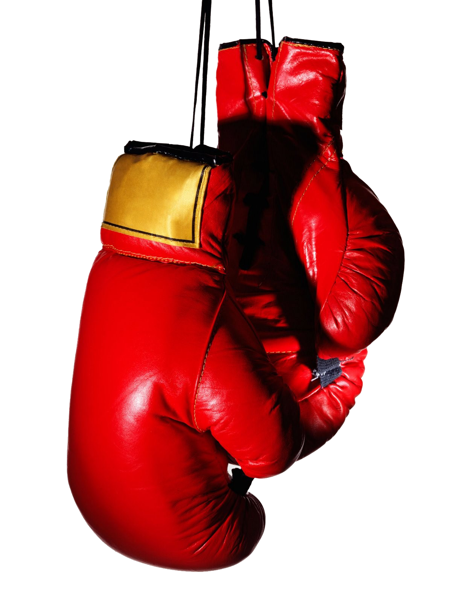
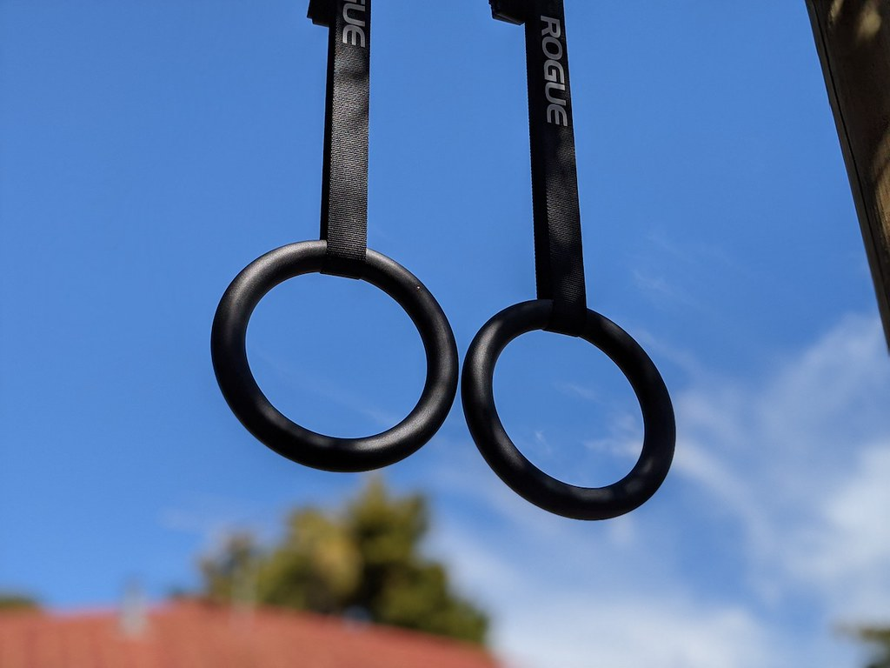

School can be stressful and mentally draining at times, so I try to keep a balance by doing things that help me clear my mind. Two of my main ways to decompress are gaming and staying active through calisthenics, boxing, and occasional runs. These hobbies give me a break from schoolwork and help me reset mentally so I can come back focused and refreshed.
Gaming is one of my favorite ways to relax and mentally unwind. It lets me disconnect from school for a moment and enjoy something challenging but fun. My favorite genre of games is Souls-like games and my current favorite game is Elden Ring: Nightreign. Nightreign feels like a Souls-like game with a flare of urgency, especially when it comes to defeating bosses quickly, which changes how you approach each fight due to the time constraints. Overall, I find gaming to be a way to keep my mind working without a stress factor.
Staying active is another major way I decompress, and it helps me feel calmer throughout the day. Boxing is one of my main activities and I have been doing it for seven years now, being one of the best ways to keep my mind busy while releasing stress. A lot of boxing involves thinking, timing, and visualizing what you will do next and how you should react to things, keeping both my body and mind engaged. I also practice calisthenics, which I’ve done for a little over eight years. My interest in it started after seeing gymnasts on the Olympic rings, but calisthenics felt more structured for strength training compared to gymnastics, which also requires a lot of flexibility. Lastly, I enjoy going on runs, either in the morning to wake up or at night to wind down.
|
 |
 |